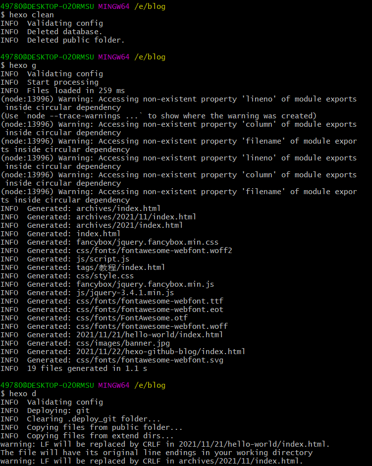

在Github上创建博客的仓库
仓库的名称必须是Github的用户名（因为我已经创建过仓库了，所以显示已经存在）
安装NodeJS
在官网https://nodejs.org 下载LTS版本即可
若安装成功，在cmd下应当可以使用nodejs的相关指令
此处建议重新设置npm在安装模块的时的路径，首先在nodejs安装目录下新建node_cache和node_global两个文件夹，然后在cmd下执行如下指令：

把nodejs/node_global和nodejs/node_global/node_modules都添加到环境变量中，具体方式为此电脑 > 右键 > 属性 > 在关于的相关设置里找到高级系统设置 > 高级 > 环境变量 > 修改用户的Path变量，变量修改方式如下：
设置完环境变量之后可能需要重启才能使用
安装Hexo
以管理员身份启动cmd，执行命令npm install -g hexo-cli
创建本地的Blog文件夹
在本地创建存储博客的文件夹，启动git bash并进入
在该空文件夹下执行hexo init，若找不到hexo指令，将其bin文件夹的路径即“E:\nodejs\node_global\node_modules\hexo-cli\bin”添加到环境变量
hexo init必须在空文件夹下执行，该指令会clone hexo的git仓库，所以可能需要挂梯子
若此过程顺利，再执行hexo s，是可以在本地看到博客网站的，用浏览器访问http://localhost:4000/
本地Blog和Github关联
修改博客文件夹下的_config.yml文件，找到末尾的deploy项，依次填写type、repository、branch三个项，注意中间的空格。reposiory是github的仓库地址，可以使用https方式或者ssh方式。
1 | deploy: |
个人仓库中可以看到repository的地址：

上传本地博客
在博客文件夹依次执行如下指令
1 | hexo clean |
即可上传博客。hexo clean表示清理缓存，hexo g表示把source文件夹里面的markdown文件编译成html文件，并放入public文件夹。hexo d表示将public文件夹部署到_config.yml文件deploy属性指定的位置。
)
然后就可以通过 username.github.io访问自己的博客了：